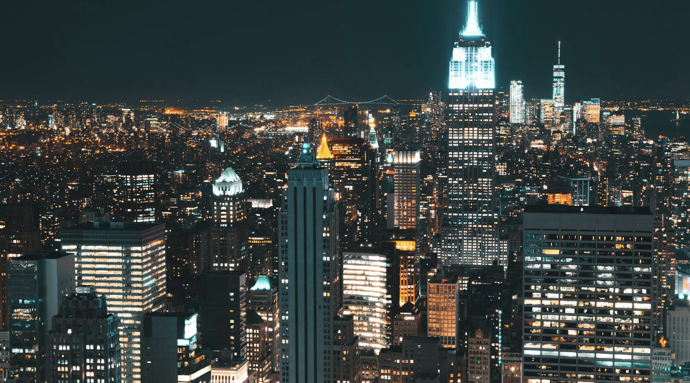

Starlit skyline, soft breeze, quiet laughs. The city hums below while we chase the first hint of dawn. ✨🌃
#NYC #teaser #nightshoot #rooftop
Steel and glass turn to watercolor as the horizon blushes. Holding onto this stillness before the city wakes. 🌅
#NYC #sunrise #rooftop
A rooftop whisper: “stay a little longer.” City lights dim, first birds call, and plans for today feel miles away. 🕊️
#NYC #rooftop #nightshoot
